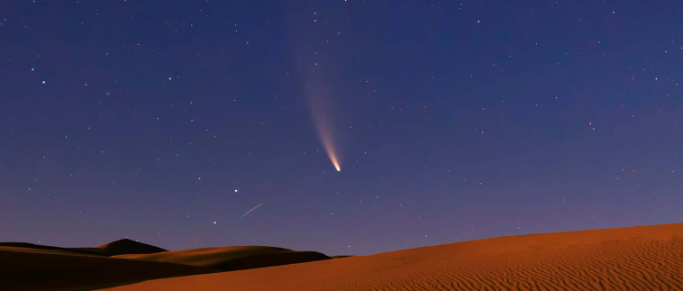

El Sistema Solar es un conjunto formado por el Sol y los ocho planetas que giran a su
alrededor. De los ocho planetas, uno es donde vivimos: la Tierra.
Además de estos elementos hay otros cuerpos celestes que también orbitan alrededor de la gran estrella
solar, como los satélites de cada planeta, los cometas o los
asteroides.
Lo cierto es que hace tanto tiempo que es muy difícil saber este dato con seguridad, pero se cree que fue hace… ¡4.5 MIL MILLONES DE AÑOS! Si lo piensas bien te darás cuenta de que estamos hablando de un espacio temporal impactante y que nos resulta difícil de imaginar.
Los planetas del Sistema Solar son ocho cuerpos celestes sólidos de forma casi circular.
A diferencia del Sol, no tienen luz propia.
Los planetas están siempre moviéndose y girando alrededor del Sol. A este
movimiento se le llama movimiento de traslación, y cada uno lo hace en un
tiempo diferente. El tiempo que nuestro planeta Tierra tarda en dar la vuelta completa al
Sol es lo que llamamos año, es decir, 365 días. Sí, eso es: cada año que vivimos es una
vuelta que da la Tierra alrededor del Sol.
Además de esta órbita, la Tierra gira sobre sí misma y tarda exactamente 24 horas. Para
nosotros es un día completo. Esto se conoce como movimiento de
rotación.
Por tanto, mientras la Tierra da una vuelta completa alrededor del Sol (un año) gira sobre
sí misma 365 veces (365 días).
Por orden, de más cercano a más lejano del Sol, los planetas son: Mercurio, Venus,
Tierra, Marte, Júpiter, Saturno, Urano y Neptuno.
Como hemos dicho al principio, además del Sol y los ocho planetas que forman el Sistema Solar, existen otros elementos que también hay que tener en cuenta:
Son pequeños planetas que también orbitan alrededor del Sol y NO son satélites de ningún otro
planeta.
En nuestro Sistema Solar existen cinco: Ceres, Eris, Makemake, Haumea y
Plutón.
Se llama satélite a un cuerpo que gira alrededor de otro que suele ser más grande.
Son sólidos y carecen de atmósfera.
En el Sistema Solar los planetas poseen satélites, si bien alrededor de la Tierra
solo hay un satélite natural: la Luna.
Se llama Satélites artificiales a los fabricados y lanzados al espacio por los humanos para tomar todo tipo de datos sobre un planeta.
En el Sistema Solar hay otros elementos, como los asteroides, los cometas y los meteroides.
